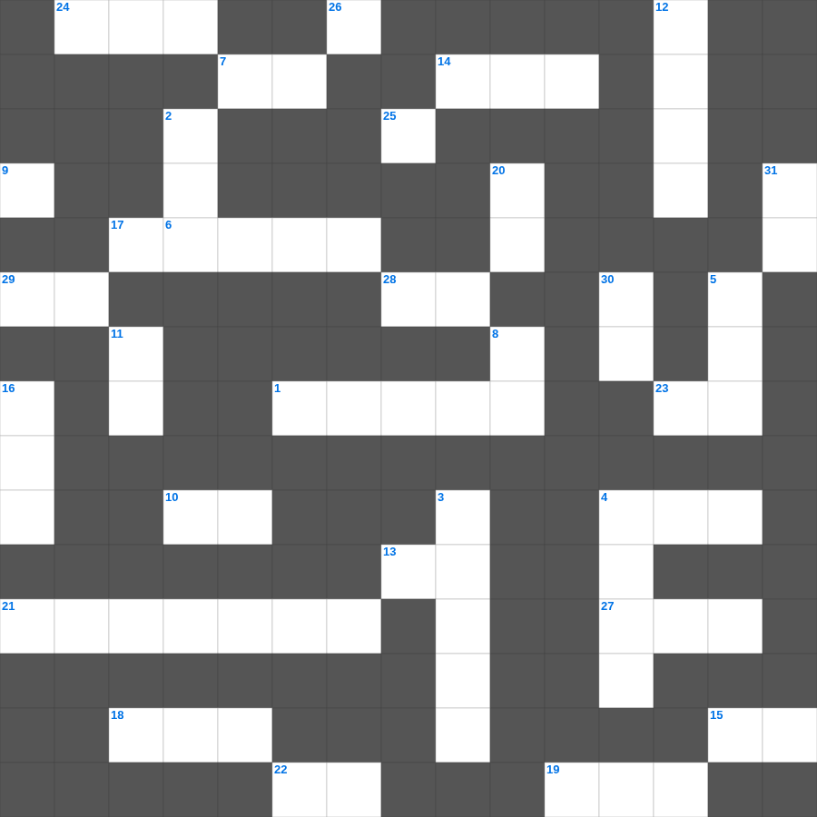

베드로후서 마스터 100
📌 서비스 정의
십자가로세로는 교회 주보와 주일학교에서 사용할 수 있는 성경 기반 가로세로 퍼즐 서비스입니다. 성경 인물, 사건, 핵심 구절을 바탕으로 제작되었습니다. 온라인 풀이 및 인쇄 기능을 제공합니다.
📖 베드로후서란?
베드로후서는 거짓 교사들의 위험을 경고하고, 그리스도의 재림과 새 하늘과 새 땅에 대한 소망을 굳게 붙잡을 것을 권면하는 서신입니다.
📚 베드로후서의 주요 사건·주제
신성한 성품에 참여함에 대한 가르침 · 거짓 선생들에 대한 경고 · 주의 날(재림)에 대한 가르침 · 새 하늘과 새 땅에 대한 소망 · 성경 예언의 권위에 대한 확증
베드로후서의 말씀을 퀴즈로 배우는 베드로후서 성경공부 자료입니다. 가로 힌트와 세로 힌트를 보고 35개의 단어를 맞춰보세요. 인쇄도 가능하고 정답 확인도 바로 되니 소그룹 모임이나 가정 예배 시간에도 활용하실 수 있습니다.

📝 가로 힌트
1. 처음 익은 열매를 어디로 가져오기로 했나
4. 여호수아의 마지막 고백 '나와 내 집은 이것을 섬기겠노라'
6. 스스로 이것하게 여기지 말지어다 여호와를 경외하며 악을 떠날지어다
7. 그들은 멸망하게 할 이것을 슬그머니 끌어들여 자기들을 사신 주를 부인하고
10. 하나님의 말씀에 이것하거나 감하지 말라
13. 전신갑주: 모든 것 위에 이것의 방패를 가지고 이로써 능히 악한 자의 모든 불화살을 소멸하고
13. 우리는 이것으로 행하고 보는 것으로 행하지 아니함이로다
14. 하나님이 세우신 권위의 증거로 싹이 난 아론의 이것
15. 민간에 거짓 선지자들이 일어났었나니 이와 같이 너희 중에도 거짓 이것들이 있으리라
17. 네 아이를 훈계하되 죽일 마음은 두지 말지니라 채찍으로 그를 때릴지라도 그가 이것 하지 아니하리라
18. 너는 내게 부르짖으라 내가 네게 응답하겠고 네가 알지 못하는 크고 이것 일을 네게 보이리라
19. 정탐꾼들이 가져온 포도 송이가 너무 커서 이것에 꿰어 맴
21. 마가의 어머니 마리아의 집에서 일어난 신약의 큰 사건
22. 예수께서 고향에서 배척받으실 때 선지자가 자기 고향과 이것 외에서는 존경을 받지 못함이 없느니라
23. 네가 이 세대에서 부한 자들을 명하여 마음을 높이지 말고 정함이 없는 이것에 소망을 두지 말고
24. 일어나 네 이것을 들고 걸어가라
25. 원망하는 백성에게 하신 말씀 '너희 말이 내 이것에 들린 대로 행하리라'
27. 예루살렘 교회 의장으로 예루살렘 회의를 주재한 인물
28. 가인이 아우를 죽인 후 대답한 말 '내가 내 아우를 지키는 자니이까'
29. 그러나 원수 같이 생각하지 말고 이것 같이 권면하라
📝 세로 힌트
2. 우리가 육신으로 행하나 육신에 따라 이것하지 아니하노니
3. 모든 지각에 뛰어난 하나님의 평강이 지키시는 두 가지
4. 요아스 왕을 가르쳤던 제사장 이름
5. 유다인들이 대적을 죽였으나 무엇에는 손을 대지 않았나
8. 그가 거룩하게 된 자들을 한 번의 제사로 영원히 이것하게 하셨느니라
9. 무리가 그 칼을 쳐서 보습을 만들고 창을 쳐서 이것을 만들 것이며
11. 요시야가 제거한 것 '가증한 것들과 산당과 이것'
12. 히스기야가 깨뜨린 모세의 놋뱀 이름 (놋조각이라는 뜻)
15. 내가 기도하노라 너희 사랑을 지식과 모든 총명으로 점점 더 풍성하게 하사 너희로 지극히 이것한 것을 분별하며
16. 바울이 빌레몬의 집 교회를 언급하며 부른 인물: 함께 군사 된 이것
18. 왕이 보신 큰 신상의 머리는 순금이요 가슴과 두 팔은 이것이요
20. 그리스도 도의 초보를 버리고 죽은 행실을 회개함과 하나님께 대한 이것과
26. 한 군인이 창으로 옆구리를 찌르니 곧 이것과 물이 나오더라
30. 성전 지대를 놓을 때 제사장들이 입은 옷
31. 집사의 자격 중 하나: 이것한 양심에 믿음의 비밀을 가진 자
🧩 이 퍼즐에서 배우는 내용
이 퍼즐은 베드로후서 마스터 100의 핵심 단어와 개념을 자연스럽게 복습할 수 있도록 구성되었습니다. 주일학교 수업이나 개인 성경공부에서 학습 내용을 점검하는 용도로 바로 활용할 수 있습니다.
🧑🏫 교회 교육 자료 활용
이 퍼즐은 주일학교 교재 추천 자료로 활용할 수 있고, 주일학교 주보에 넣기 좋은 분량으로 구성되어 있습니다. 수업용 주일학교 교안에 활동지로 붙이거나, 예배 후 복습용 주일학교 공과교재로 바로 사용할 수 있습니다.
🏷️ 키워드
베드로후서 성경공부 자료, 베드로후서, 십자가로세로, 성경퀴즈, 말씀퀴즈, 가로세로퍼즐, 주일학교 교재 추천, 주일학교 주보, 주일학교 교안, 주일학교 공과교재